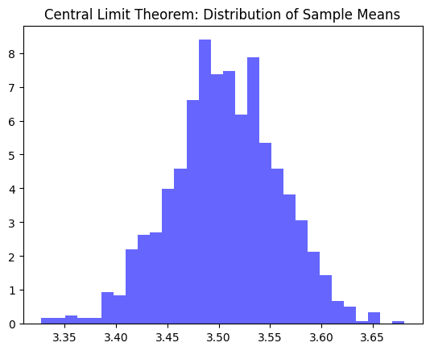

Week 3: Numpy and linear algebra#
Numpy is the python library that is dealing with all the vectors and matrices operations, which happen a lot in data science!
We are going to get familiar with numpy and other relevant libraries and how to use it to solve common linear algebra problems.
Materials are adapated from https://jakevdp.github.io/PythonDataScienceHandbook/. The book contains all the details that might be omitted in this lecture.
The original book has CC-BY-NC-ND and MIT licenses.
Install and import Numpy#
!pip install numpy
Requirement already satisfied: numpy in c:\users\sohky\appdata\local\programs\python\python312\lib\site-packages (1.26.4)
[notice] A new release of pip is available: 25.3 -> 26.0.1
[notice] To update, run: python.exe -m pip install --upgrade pip
import numpy
numpy.zeros(1)
array([0.])
By convention, you will see people import numpy this way:
import numpy as np
Creating Arrays#
Arrays are essential. Numpy allows us to create arrays that are of different dimensions.
Creating Arrays from Python Lists#
We’ll start with the standard NumPy import, under the alias np:
import numpy as np
Now we can use np.array to create arrays from Python lists:
# Integer array
L = [1, 4, 2, 5, 3]
np.array(L)
array([1, 4, 2, 5, 3])
Remember that unlike Python lists, NumPy arrays can only contain data of the same type. If the types do not match, NumPy will upcast them according to its type promotion rules; here, integers are upcast to floating point:
np.array([3.14, 4, 2, 3])
array([3.14, 4. , 2. , 3. ])
If we want to explicitly set the data type of the resulting array, we can use the dtype keyword:
np.array([1, 2, 3, 4], dtype=np.float32)
array([1., 2., 3., 4.], dtype=float32)
Finally, unlike Python lists, which are always one-dimensional sequences, NumPy arrays can be multidimensional. Here’s one way of initializing a multidimensional array using a list of lists:
# Nested lists result in multidimensional arrays
a = np.array([range(i, i + 3) for i in [2, 4, 6]])
print(a)
[[2 3 4]
[4 5 6]
[6 7 8]]
a[0]
array([2, 3, 4])
b = np.array([[ 2, 3, 4],
[4, 5, 6],
[6, 7, 8]])
b[[0,1], 2]
array([4, 6])
The inner lists are treated as rows of the resulting two-dimensional array.
How to create a 3d array in a similar way?
a[0].shape
(3,)
# Nested lists result in multidimensional arrays
c = np.array([[range(j, j + 3) for j in [i, i+1, i+2]] for i in [2, 4, 6]])
c.shape
(3, 3, 3)
c
array([[[ 2, 3, 4],
[ 3, 4, 5],
[ 4, 5, 6]],
[[ 4, 5, 6],
[ 5, 6, 7],
[ 6, 7, 8]],
[[ 6, 7, 8],
[ 7, 8, 9],
[ 8, 9, 10]]])
Creating Arrays from Scratch#
Especially for larger arrays, it is more efficient to create arrays from scratch using routines built into NumPy. Here are several examples:
# Create a length-10 integer array filled with 0s
np.zeros(10, dtype=int)
array([0, 0, 0, 0, 0, 0, 0, 0, 0, 0])
np.zeros((10,2), dtype=int)
array([[0, 0],
[0, 0],
[0, 0],
[0, 0],
[0, 0],
[0, 0],
[0, 0],
[0, 0],
[0, 0],
[0, 0]])
# Create a 3x5 floating-point array filled with 1s
np.ones((3,5), dtype=float)*3.14
array([[3.14, 3.14, 3.14, 3.14, 3.14],
[3.14, 3.14, 3.14, 3.14, 3.14],
[3.14, 3.14, 3.14, 3.14, 3.14]])
# Create a 3x5 array filled with 3.14
np.full((3, 5), 7.8)
array([[7.8, 7.8, 7.8, 7.8, 7.8],
[7.8, 7.8, 7.8, 7.8, 7.8],
[7.8, 7.8, 7.8, 7.8, 7.8]])
# Create an array filled with a linear sequence
# starting at 0, ending at 20, stepping by 2
# (this is similar to the built-in range function)
np.arange(0, 20, 2)
array([ 0, 2, 4, 6, 8, 10, 12, 14, 16, 18])
# Create an array of five values evenly spaced between 0 and 1
np.linspace(1, 4, 15)
array([1. , 1.21428571, 1.42857143, 1.64285714, 1.85714286,
2.07142857, 2.28571429, 2.5 , 2.71428571, 2.92857143,
3.14285714, 3.35714286, 3.57142857, 3.78571429, 4. ])
# Create a 3x3 array of uniformly distributed
# pseudorandom values between 0 and 1
np.random.random((3,3))
array([[0.32165972, 0.8064158 , 0.56716794],
[0.6925678 , 0.66047334, 0.49088458],
[0.222873 , 0.62869449, 0.53947711]])
# Create a 3x3 array of normally distributed pseudorandom
# values with mean 0 and standard deviation 1
np.random.normal(0, 1, (3, 3))
array([[ 1.86138149, -0.74420204, -0.27932383],
[ 0.63103858, 0.57675173, -0.83357693],
[-0.0360697 , -0.20362824, 0.09408915]])
# Create a 3x3 array of pseudorandom integers in the interval [0, 10)
np.random.randint(1, 7, (3, 3))
array([[2, 4, 4],
[3, 3, 1],
[3, 4, 2]])
# Create a 3x3 identity matrix
np.eye(4)
array([[1., 0., 0., 0.],
[0., 1., 0., 0.],
[0., 0., 1., 0.],
[0., 0., 0., 1.]])
# Create an uninitialized array of three integers; the values will be
# whatever happens to already exist at that memory location
np.empty((3,3))
array([[1.86138149, 0.74420204, 0.27932383],
[0.63103858, 0.57675173, 0.83357693],
[0.0360697 , 0.20362824, 0.09408915]])
NumPy Standard Data Types#
NumPy arrays contain values of a single type, so it is important to have detailed knowledge of those types and their limitations. Because NumPy is built in C, the types will be familiar to users of C, Fortran, and other related languages.
The standard NumPy data types are listed in the following table. Note that when constructing an array, they can be specified using a string:
np.zeros(10, dtype='int16')
Or using the associated NumPy object:
np.zeros(10, dtype=np.int16)
Data type |
Description |
|---|---|
|
Boolean (True or False) stored as a byte |
|
Default integer type (same as C |
|
Identical to C |
|
Integer used for indexing (same as C |
|
Byte (–128 to 127) |
|
Integer (–32768 to 32767) |
|
Integer (–2147483648 to 2147483647) |
|
Integer (–9223372036854775808 to 9223372036854775807) |
|
Unsigned integer (0 to 255) |
|
Unsigned integer (0 to 65535) |
|
Unsigned integer (0 to 4294967295) |
|
Unsigned integer (0 to 18446744073709551615) |
|
Shorthand for |
|
Half-precision float: sign bit, 5 bits exponent, 10 bits mantissa |
|
Single-precision float: sign bit, 8 bits exponent, 23 bits mantissa |
|
Double-precision float: sign bit, 11 bits exponent, 52 bits mantissa |
|
Shorthand for |
|
Complex number, represented by two 32-bit floats |
|
Complex number, represented by two 64-bit floats |
More advanced type specification is possible; for more information, refer to the NumPy documentation.
NumPy Array Attributes#
First let’s discuss some useful array attributes. We’ll start by defining random arrays of one, two, and three dimensions. We’ll use NumPy’s random number generator, which we will seed with a set value in order to ensure that the same random arrays are generated each time this code is run:
import numpy as np
rng = np.random.default_rng(seed=42) # seed for reproducibility
x1 = rng.integers(10, size=6) # one-dimensional array
x2 = rng.integers(10, size=(3, 4)) # two-dimensional array
x3 = rng.integers(10, size=(3, 4, 5)) # three-dimensional array
Each array has attributes including ndim (the number of dimensions), shape (the size of each dimension), size (the total size of the array), and dtype (the type of each element):
print("x3 ndim: ", x3.ndim)
print("x3 shape:", x3.shape)
print("x3 size: ", x3.size)
print("dtype: ", x3.dtype)
x3 ndim: 3
x3 shape: (3, 4, 5)
x3 size: 60
dtype: int64
Array Indexing: Accessing Single Elements#
If you are familiar with Python’s standard list indexing, indexing in NumPy will feel quite familiar. In a one-dimensional array, the \(i^{th}\) value (counting from zero) can be accessed by specifying the desired index in square brackets, just as with Python lists:
x1
array([0, 7, 6, 4, 4, 8], dtype=int64)
x1[0]
0
x1[4]
4
To index from the end of the array, you can use negative indices:
x1[-1]
8
x1[-2]
4
In a multidimensional array, items can be accessed using a comma-separated (row, column) tuple:
x2
array([[0, 6, 2, 0],
[5, 9, 7, 7],
[7, 7, 5, 1]], dtype=int64)
x2[0, 0]
0
x2[2, 0]
7
x2[2, -1]
1
Values can also be modified using any of the preceding index notation:
x2[0, 3] = 12
x2
array([[ 0, 6, 2, 12],
[ 5, 9, 7, 7],
[ 7, 7, 5, 1]], dtype=int64)
Keep in mind that, unlike Python lists, NumPy arrays have a fixed type. This means, for example, that if you attempt to insert a floating-point value into an integer array, the value will be silently truncated. Don’t be caught unaware by this behavior!
print(x1.dtype)
int64
x1[0] = 3.14159 # this will be truncated!
x1
array([3, 7, 6, 4, 4, 8], dtype=int64)
Array Slicing: Accessing Subarrays#
Just as we can use square brackets to access individual array elements, we can also use them to access subarrays with the slice notation, marked by the colon (:) character.
The NumPy slicing syntax follows that of the standard Python list; to access a slice of an array x, use this:
x[start:stop:step]
If any of these are unspecified, they default to the values start=0, stop=<size of dimension>, step=1.
Let’s look at some examples of accessing subarrays in one dimension and in multiple dimensions.
One-Dimensional Subarrays#
Here are some examples of accessing elements in one-dimensional subarrays:
x1
array([3, 7, 6, 4, 4, 8], dtype=int64)
x1[0:3:1]
array([3, 7, 6], dtype=int64)
x1[:3] # first three elements
array([3, 7, 6], dtype=int64)
x1[3:6:1]
array([4, 4, 8], dtype=int64)
x1[3:] # elements after index 3
array([4, 4, 8], dtype=int64)
print(x1)
[3 7 6 4 4 8]
x1[1:4] # middle subarray
array([7, 6, 4], dtype=int64)
x1[::2] # every second element
array([3, 6, 4], dtype=int64)
x1[1::2] # every second element, starting at index 1
array([7, 4, 8], dtype=int64)
A potentially confusing case is when the step value is negative.
In this case, the defaults for start and stop are swapped.
This becomes a convenient way to reverse an array:
x1
array([3, 7, 6, 4, 4, 8], dtype=int64)
x1[::-1] # all elements, reversed
array([8, 4, 4, 6, 7, 3], dtype=int64)
x1[4::-2] # every second element from index 4, reversed
array([4, 6, 3], dtype=int64)
Multidimensional Subarrays#
Multidimensional slices work in the same way, with multiple slices separated by commas. For example:
x2
array([[ 0, 6, 2, 12],
[ 5, 9, 7, 7],
[ 7, 7, 5, 1]], dtype=int64)
x2[2, 3]
1
x2[:2, :3]=1 # first two rows & three columns
print(x2)
[[ 1 1 1 12]
[ 1 1 1 7]
[ 7 7 5 1]]
x2[:3, ::2] # three rows, every second column
array([[1, 1],
[1, 1],
[7, 5]], dtype=int64)
x2[::-1, ::-1] # all rows & columns, reversed
array([[ 1, 5, 7, 7],
[ 7, 1, 1, 1],
[12, 1, 1, 1]], dtype=int64)
Accessing array rows and columns#
One commonly needed routine is accessing single rows or columns of an array.
This can be done by combining indexing and slicing, using an empty slice marked by a single colon (:):
x2
array([[ 1, 1, 1, 12],
[ 1, 1, 1, 7],
[ 7, 7, 5, 1]], dtype=int64)
x2[:, 0] # first column of x2
array([1, 1, 7], dtype=int64)
x2[0, :] # first row of x2
array([ 1, 1, 1, 12], dtype=int64)
In the case of row access, the empty slice can be omitted for a more compact syntax:
print(x2)
[[ 1 1 1 12]
[ 1 1 1 7]
[ 7 7 5 1]]
x2[0] # equivalent to x2[0, :]
array([ 1, 1, 1, 12], dtype=int64)
Subarrays as No-Copy Views#
Unlike Python list slices, NumPy array slices are returned as views rather than copies of the array data. Consider our two-dimensional array from before:
print(x2)
[[ 1 1 1 12]
[ 1 1 1 7]
[ 7 7 5 1]]
Let’s extract a \(2 \times 2\) subarray from this:
x2_sub = x2[:2, :2]
print(x2_sub)
[[1 1]
[1 1]]
Now if we modify this subarray, we’ll see that the original array is changed! Observe:
x2_sub[0, 0] = 99
print(x2_sub)
[[99 1]
[ 1 1]]
print(x2)
[[99 1 1 12]
[ 1 1 1 7]
[ 7 7 5 1]]
Some users may find this surprising, but it can be advantageous: for example, when working with large datasets, we can access and process pieces of these datasets without the need to copy the underlying data buffer.
Creating Copies of Arrays#
Despite the nice features of array views, it is sometimes useful to instead explicitly copy the data within an array or a subarray. This can be most easily done with the copy method:
x2
array([[99, 1, 1, 12],
[ 1, 1, 1, 7],
[ 7, 7, 5, 1]], dtype=int64)
x2_sub_copy = x2[:2, :2].copy()
print(x2_sub_copy)
[[99 1]
[ 1 1]]
If we now modify this subarray, the original array is not touched:
x2_sub_copy[0, 0] = 42
print(x2_sub_copy)
[[42 1]
[ 1 1]]
print(x2)
[[99 1 1 12]
[ 1 1 1 7]
[ 7 7 5 1]]
Reshaping of Arrays#
Another useful type of operation is reshaping of arrays, which can be done with the reshape method.
For example, if you want to put the numbers 1 through 9 in a \(3 \times 3\) grid, you can do the following:
grid = np.arange(1, 10).reshape(3, 3)
print(grid)
[[1 2 3]
[4 5 6]
[7 8 9]]
grid = np.zeros((1,9))
grid = grid.reshape(3,3)
print(grid.shape)
(3, 3)
grid.shape
(3, 3)
Note that for this to work, the size of the initial array must match the size of the reshaped array, and in most cases the reshape method will return a no-copy view of the initial array.
A common reshaping operation is converting a one-dimensional array into a two-dimensional row or column matrix:
x = np.array([1, 2, 3])
x.reshape((1, 3)) # row vector via reshape
array([[1, 2, 3]])
x.reshape((3, 1)) # column vector via reshape
array([[1],
[2],
[3]])
A convenient shorthand for this is to use np.newaxis in the slicing syntax:
x.shape
(3,)
x[np.newaxis, np.newaxis, :].shape # row vector via newaxis
(1, 1, 3)
x.shape
(3,)
x[:, np.newaxis].shape # column vector via newaxis
(3, 1)
This is a pattern that we will utilize often throughout the remainder of the book.
Array Concatenation and Splitting#
All of the preceding routines worked on single arrays. NumPy also provides tools to combine multiple arrays into one, and to conversely split a single array into multiple arrays.
Concatenation of Arrays#
Concatenation, or joining of two arrays in NumPy, is primarily accomplished using the routines np.concatenate, np.vstack, and np.hstack.
np.concatenate takes a tuple or list of arrays as its first argument, as you can see here:
x = np.array([1, 2, 3])
y = np.array([3, 2, 1])
np.concatenate([x, y])
array([1, 2, 3, 3, 2, 1])
You can also concatenate more than two arrays at once:
z = np.array([99, 99, 99])
print(np.concatenate([x, y, z]))
[ 1 2 3 3 2 1 99 99 99]
And it can be used for two-dimensional arrays:
grid = np.array([[1, 2, 3],
[4, 5, 6]])
print(grid.shape)
(2, 3)
# concatenate along the first axis
np.concatenate([grid, grid]).shape
(4, 3)
# concatenate along the second axis (zero-indexed)
np.concatenate([grid, grid], axis=1).shape
(2, 6)
For working with arrays of mixed dimensions, it can be clearer to use the np.vstack (vertical stack) and np.hstack (horizontal stack) functions:
# vertically stack the arrays
np.vstack([x, grid])
array([[1, 2, 3],
[1, 2, 3],
[4, 5, 6]])
# horizontally stack the arrays
y = np.array([[99],
[99]])
np.hstack([grid, y])
array([[ 1, 2, 3, 99],
[ 4, 5, 6, 99]])
Splitting of Arrays#
The opposite of concatenation is splitting, which is implemented by the functions np.split, np.hsplit, and np.vsplit. For each of these, we can pass a list of indices giving the split points:
x = [1, 2, 3, 99, 99, 3, 2, 1]
x1, x2, x3 = np.split(x, [3, 5])
print(x1, x2, x3)
[1 2 3] [99 99] [3 2 1]
x1[:] = 9
print(x)
[1, 2, 3, 99, 99, 3, 2, 1]
Notice that N split points leads to N + 1 subarrays.
The related functions np.hsplit and np.vsplit are similar:
grid = np.arange(16).reshape((4, 4))
grid
array([[ 0, 1, 2, 3],
[ 4, 5, 6, 7],
[ 8, 9, 10, 11],
[12, 13, 14, 15]])
upper, lower = np.vsplit(grid, [2])
print(upper)
print(lower)
[[0 1 2 3]
[4 5 6 7]]
[[ 8 9 10 11]
[12 13 14 15]]
left, right = np.hsplit(grid, [2])
print(left)
print(right)
[[ 0 1]
[ 4 5]
[ 8 9]
[12 13]]
[[ 2 3]
[ 6 7]
[10 11]
[14 15]]
The Slowness of Loops#
Python’s default implementation (known as CPython) does some operations very slowly. This is partly due to the dynamic, interpreted nature of the language; types are flexible, so sequences of operations cannot be compiled down to efficient machine code as in languages like C and Fortran. Recently there have been various attempts to address this weakness: well-known examples are the PyPy project, a just-in-time compiled implementation of Python; the Cython project, which converts Python code to compilable C code; and the Numba project, which converts snippets of Python code to fast LLVM bytecode. Each of these has its strengths and weaknesses, but it is safe to say that none of the three approaches has yet surpassed the reach and popularity of the standard CPython engine.
The relative sluggishness of Python generally manifests itself in situations where many small operations are being repeated; for instance, looping over arrays to operate on each element. For example, imagine we have an array of values and we’d like to compute the reciprocal of each. A straightforward approach might look like this:
import numpy as np
a = np.random.random((3,5))
print(a)
[[0.41001933 0.05854162 0.04996616 0.43856493 0.25196033]
[0.47309699 0.12780963 0.57626714 0.08432154 0.23827184]
[0.83659131 0.86995543 0.84138968 0.72588607 0.99837553]]
b = np.random.random((3,5))
print(b)
[[0.18610502 0.08392998 0.22747667 0.04404581 0.50160322]
[0.90990886 0.49595577 0.45869471 0.71951036 0.70426439]
[0.60628829 0.91151629 0.87192371 0.92293826 0.26015132]]
c = np.zeros_like(a)
for i in range(a.shape[0]):
for j in range(a.shape[1]):
c[i,j]= a[i,j]+b[i,j]
a + b
array([[0.59612436, 0.14247159, 0.27744283, 0.48261074, 0.75356355],
[1.38300585, 0.6237654 , 1.03496185, 0.8038319 , 0.94253623],
[1.4428796 , 1.78147172, 1.71331338, 1.64882433, 1.25852685]])
np.add(a,b)
array([[0.59612436, 0.14247159, 0.27744283, 0.48261074, 0.75356355],
[1.38300585, 0.6237654 , 1.03496185, 0.8038319 , 0.94253623],
[1.4428796 , 1.78147172, 1.71331338, 1.64882433, 1.25852685]])
import numpy as np
rng = np.random.default_rng(seed=1701)
def compute_reciprocals(values):
output = np.empty(len(values))
for i in range(len(values)):
output[i] = 1.0 / values[i]
return output
values = rng.integers(1, 10, size=5)
compute_reciprocals(values)
array([0.11111111, 0.25 , 1. , 0.33333333, 0.125 ])
This implementation probably feels fairly natural to someone from, say, a C or Java background.
But if we measure the execution time of this code for a large input, we see that this operation is very slow—perhaps surprisingly so!
We’ll benchmark this with IPython’s %timeit magic:
big_array = rng.integers(1, 100, size=1000000)
%timeit compute_reciprocals(big_array)
---------------------------------------------------------------------------
KeyboardInterrupt Traceback (most recent call last)
Cell In[100], line 2
1 big_array = rng.integers(1, 100, size=1000000)
----> 2 get_ipython().run_line_magic('timeit', 'compute_reciprocals(big_array)')
File ~\AppData\Local\Programs\Python\Python312\Lib\site-packages\IPython\core\interactiveshell.py:2504, in InteractiveShell.run_line_magic(self, magic_name, line, _stack_depth)
2502 kwargs['local_ns'] = self.get_local_scope(stack_depth)
2503 with self.builtin_trap:
-> 2504 result = fn(*args, **kwargs)
2506 # The code below prevents the output from being displayed
2507 # when using magics with decorator @output_can_be_silenced
2508 # when the last Python token in the expression is a ';'.
2509 if getattr(fn, magic.MAGIC_OUTPUT_CAN_BE_SILENCED, False):
File ~\AppData\Local\Programs\Python\Python312\Lib\site-packages\IPython\core\magics\execution.py:1231, in ExecutionMagics.timeit(self, line, cell, local_ns)
1228 if time_number >= 0.2:
1229 break
-> 1231 all_runs = timer.repeat(repeat, number)
1232 best = min(all_runs) / number
1233 worst = max(all_runs) / number
File ~\AppData\Local\Programs\Python\Python312\Lib\timeit.py:208, in Timer.repeat(self, repeat, number)
206 r = []
207 for i in range(repeat):
--> 208 t = self.timeit(number)
209 r.append(t)
210 return r
File ~\AppData\Local\Programs\Python\Python312\Lib\site-packages\IPython\core\magics\execution.py:184, in Timer.timeit(self, number)
182 gc.disable()
183 try:
--> 184 timing = self.inner(it, self.timer)
185 finally:
186 if gcold:
File <magic-timeit>:1, in inner(_it, _timer)
Cell In[99], line 7, in compute_reciprocals(values)
5 output = np.empty(len(values))
6 for i in range(len(values)):
----> 7 output[i] = 1.0 / values[i]
8 return output
KeyboardInterrupt:
It takes several seconds to compute these million operations and to store the result! When even cell phones have processing speeds measured in gigaflops (i.e., billions of numerical operations per second), this seems almost absurdly slow. It turns out that the bottleneck here is not the operations themselves, but the type checking and function dispatches that CPython must do at each cycle of the loop. Each time the reciprocal is computed, Python first examines the object’s type and does a dynamic lookup of the correct function to use for that type. If we were working in compiled code instead, this type specification would be known before the code executed and the result could be computed much more efficiently.
%timeit (1.0 / big_array)
Exploring NumPy’s Ufuncs#
Ufuncs exist in two flavors: unary ufuncs, which operate on a single input, and binary ufuncs, which operate on two inputs. We’ll see examples of both these types of functions here.
NumPy’s ufuncs feel very natural to use because they make use of Python’s native arithmetic operators. The standard addition, subtraction, multiplication, and division can all be used:
x = np.arange(4)
print("x =", x)
print("x + 5 =", x + 5)
print("x - 5 =", x - 5)
print("x * 2 =", x * 2)
print("x / 2 =", x / 2)
print("x // 2 =", x // 2) # floor division
There is also a unary ufunc for negation, a ** operator for exponentiation, and a % operator for modulus:
print("-x = ", -x)
print("x ** 2 = ", x ** 2)
print("x % 2 = ", x % 2)
In addition, these can be strung together however you wish, and the standard order of operations is respected:
-(0.5*x + 1) ** 2
All of these arithmetic operations are simply convenient wrappers around specific ufuncs built into NumPy. For example, the + operator is a wrapper for the add ufunc:
np.add(x, 2)
The following table lists the arithmetic operators implemented in NumPy:
Operator |
Equivalent ufunc |
Description |
|---|---|---|
|
|
Addition (e.g., |
|
|
Subtraction (e.g., |
|
|
Unary negation (e.g., |
|
|
Multiplication (e.g., |
|
|
Division (e.g., |
|
|
Floor division (e.g., |
|
|
Exponentiation (e.g., |
|
|
Modulus/remainder (e.g., |
Aggregations: min, max, and Everything in Between#
A first step in exploring any dataset is often to compute various summary statistics. Perhaps the most common summary statistics are the mean and standard deviation, which allow you to summarize the “typical” values in a dataset, but other aggregations are useful as well (the sum, product, median, minimum and maximum, quantiles, etc.).
NumPy has fast built-in aggregation functions for working on arrays; we’ll discuss and try out some of them here.
Summing the Values in an Array#
As a quick example, consider computing the sum of all values in an array.
Python itself can do this using the built-in sum function:
import numpy as np
rng = np.random.default_rng(seed=42)
L = rng.random(100)
print(L.shape)
sum(L)
The syntax is quite similar to that of NumPy’s sum function, and the result is the same in the simplest case:
np.sum(L)
L.sum()
However, because it executes the operation in compiled code, NumPy’s version of the operation is computed much more quickly:
big_array = rng.random(1000000)
%timeit sum(big_array)
%timeit np.sum(big_array)
big_array.max()
Be careful, though: the sum function and the np.sum function are not identical, which can sometimes lead to confusion!
In particular, their optional arguments have different meanings (sum(x, 1) initializes the sum at 1, while np.sum(x, 1) sums along axis 1), and np.sum is aware of multiple array dimensions, as we will see in the following section.
Minimum and Maximum#
Similarly, Python has built-in min and max functions, used to find the minimum value and maximum value of any given array:
min(big_array), max(big_array)
NumPy’s corresponding functions have similar syntax, and again operate much more quickly:
np.min(big_array), np.max(big_array)
big_array.sum()
%timeit min(big_array)
%timeit np.min(big_array)
For min, max, sum, and several other NumPy aggregates, a shorter syntax is to use methods of the array object itself:
print(big_array.min(), big_array.max(), big_array.sum())
Whenever possible, make sure that you are using the NumPy version of these aggregates when operating on NumPy arrays!
Multidimensional Aggregates#
One common type of aggregation operation is an aggregate along a row or column. Say you have some data stored in a two-dimensional array:
a = [1,3,4]
b = [1,3,5]
a+b
M = rng.integers(0, 10, (3, 4, 5))
print(M)
NumPy aggregations will apply across all elements of a multidimensional array:
M.sum()
Aggregation functions take an additional argument specifying the axis along which the aggregate is computed. For example, we can find the minimum value within each column by specifying axis=0:
print(M)
M.max(axis=0)
M.max(axis=2)
The function returns four values, corresponding to the four columns of numbers.
Similarly, we can find the maximum value within each row:
M.max(axis=1)
The way the axis is specified here can be confusing to users coming from other languages.
The axis keyword specifies the dimension of the array that will be collapsed, rather than the dimension that will be returned.
So, specifying axis=0 means that axis 0 will be collapsed: for two-dimensional arrays, values within each column will be aggregated.
Other Aggregation Functions#
NumPy provides several other aggregation functions with a similar API, and additionally most have a NaN-safe counterpart that computes the result while ignoring missing values, which are marked by the special IEEE floating-point NaN value.
The following table provides a list of useful aggregation functions available in NumPy:
Function name |
NaN-safe version |
Description |
|---|---|---|
|
|
Compute sum of elements |
|
|
Compute product of elements |
|
|
Compute mean of elements |
|
|
Compute standard deviation |
|
|
Compute variance |
|
|
Find minimum value |
|
|
Find maximum value |
|
|
Find index of minimum value |
|
|
Find index of maximum value |
|
|
Compute median of elements |
|
|
Compute rank-based statistics of elements |
|
N/A |
Evaluate whether any elements are true |
|
N/A |
Evaluate whether all elements are true |
Computation on Arrays: Broadcasting#
Broadcasting is a set of rules by which NumPy lets you apply binary operations (e.g., addition, subtraction, multiplication, etc.) between arrays of different sizes and shapes.
Introducing Broadcasting#
Recall that for arrays of the same size, binary operations are performed on an element-by-element basis:
a = np.array([0, 1, 2])
b = np.array([5, 5, 5])
a + b
print(a)
print(b)
Broadcasting allows these types of binary operations to be performed on arrays of different sizes—for example, we can just as easily add a scalar (think of it as a zero-dimensional array) to an array:
a + 5
We can think of this as an operation that stretches or duplicates the value 5 into the array [5, 5, 5], and adds the results.
We can similarly extend this idea to arrays of higher dimension. Observe the result when we add a one-dimensional array to a two-dimensional array:
M = np.ones((3, 3))
M
M + a
Here the one-dimensional array a is stretched, or broadcasted, across the second dimension in order to match the shape of M.
While these examples are relatively easy to understand, more complicated cases can involve broadcasting of both arrays. Consider the following example:
a = np.arange(3)
b = np.arange(3)[:, np.newaxis]
print(a)
print(b)
a + b
Just as before we stretched or broadcasted one value to match the shape of the other, here we’ve stretched both a and b to match a common shape, and the result is a two-dimensional array!
The geometry of these examples is visualized in the following figure.

The light boxes represent the broadcasted values. This way of thinking about broadcasting may raise questions about its efficiency in terms of memory use, but worry not: NumPy broadcasting does not actually copy the broadcasted values in memory. Still, this can be a useful mental model as we think about broadcasting.
Rules of Broadcasting#
Broadcasting in NumPy follows a strict set of rules to determine the interaction between the two arrays:
Rule 1: If the two arrays differ in their number of dimensions, the shape of the one with fewer dimensions is padded with ones on its leading (left) side.
Rule 2: If the shape of the two arrays does not match in any dimension, the array with shape equal to 1 in that dimension is stretched to match the other shape.
Rule 3: If in any dimension the sizes disagree and neither is equal to 1, an error is raised.
To make these rules clear, let’s consider a few examples in detail.
Broadcasting Example 1#
Suppose we want to add a two-dimensional array to a one-dimensional array:
M = np.ones((2, 3))
a = np.arange(3)
M
a
Let’s consider an operation on these two arrays, which have the following shapes:
M.shapeis(2, 3)a.shapeis(3,)
We see by rule 1 that the array a has fewer dimensions, so we pad it on the left with ones:
M.shaperemains(2, 3)a.shapebecomes(1, 3)
By rule 2, we now see that the first dimension disagrees, so we stretch this dimension to match:
M.shaperemains(2, 3)a.shapebecomes(2, 3)
The shapes now match, and we see that the final shape will be (2, 3):
M + a
Broadcasting Example 2#
Now let’s take a look at an example where both arrays need to be broadcast:
a = np.arange(3).reshape((3, 1))
b = np.arange(3)
a
b
Again, we’ll start by determining the shapes of the arrays:
a.shapeis(3, 1)b.shapeis(3,)
Rule 1 says we must pad the shape of b with ones:
a.shaperemains(3, 1)b.shapebecomes(1, 3)
And rule 2 tells us that we must upgrade each of these 1s to match the corresponding size of the other array:
a.shapebecomes(3, 3)b.shapebecomes(3, 3)
Because the results match, these shapes are compatible. We can see this here:
a + b
Broadcasting Example 3#
Next, let’s take a look at an example in which the two arrays are not compatible:
M = np.ones((3, 2))
a = np.arange(3)
This is just a slightly different situation than in the first example: the matrix M is transposed.
How does this affect the calculation? The shapes of the arrays are as follows:
M.shapeis(3, 2)a.shapeis(3,)
Again, rule 1 tells us that we must pad the shape of a with ones:
M.shaperemains(3, 2)a.shapebecomes(1, 3)
By rule 2, the first dimension of a is then stretched to match that of M:
M.shaperemains(3, 2)a.shapebecomes(3, 3)
Now we hit rule 3—the final shapes do not match, so these two arrays are incompatible, as we can observe by attempting this operation:
M + a
Note the potential confusion here: you could imagine making a and M compatible by, say, padding a’s shape with ones on the right rather than the left.
But this is not how the broadcasting rules work!
That sort of flexibility might be useful in some cases, but it would lead to potential areas of ambiguity.
If right-side padding is what you’d like, you can do this explicitly by reshaping the array:
a[:, np.newaxis].shape
M + a[:, np.newaxis]
Also notice that while we’ve been focusing on the + operator here, these broadcasting rules apply to any binary ufunc.
For example, here is the logaddexp(a, b) function, which computes log(exp(a) + exp(b)) with more precision than the naive approach:
np.logaddexp(M, a[:, np.newaxis])
Broadcasting in Practice#
Broadcasting operations are very common. We’ll now take a look at some instances of where they can be useful.
Centering an Array#
We saw that ufuncs allow a NumPy user to remove the need to explicitly write slow Python loops. Broadcasting extends this ability. One commonly seen example in data science is subtracting the row-wise mean from an array of data. Imagine we have an array of 10 observations, each of which consists of 3 values. We’ll store this in a \(10 \times 3\) array:
rng = np.random.default_rng(seed=42)
X = rng.random((10, 3))
We can compute the mean of each column using the mean aggregate across the first dimension:
Xmean = X.mean(0)
Xmean
And now we can center the X array by subtracting the mean (this is a broadcasting operation):
X_centered = X - Xmean
To double-check that we’ve done this correctly, we can check that the centered array has a mean near zero:
X_centered.mean(0)
To within machine precision, the mean is now zero.
Plotting a Two-Dimensional Function#
One place that broadcasting often comes in handy is in displaying images based on two-dimensional functions. If we want to define a function \(z = f(x, y)\), broadcasting can be used to compute the function across the grid:
# x and y have 50 steps from 0 to 5
x = np.linspace(0, 5, 50)
y = np.linspace(0, 5, 50)[:, np.newaxis]
z = np.sin(x) ** 10 + np.cos(10 + y * x) * np.cos(x)
We’ll use Matplotlib to plot this two-dimensional array, shown in the following figure:
%matplotlib inline
import matplotlib.pyplot as plt
plt.imshow(z, origin='lower', extent=[0, 5, 0, 5])
plt.colorbar();
print(x.shape)
print(y.shape)
print(z.shape)
The result is a compelling visualization of the two-dimensional function.
Comparisons, Masks, and Boolean Logic#
This chapter covers the use of Boolean masks to examine and manipulate values within NumPy arrays. Masking comes up when you want to extract, modify, count, or otherwise manipulate values in an array based on some criterion: for example, you might wish to count all values greater than a certain value, or remove all outliers that are above some threshold. In NumPy, Boolean masking is often the most efficient way to accomplish these types of tasks.
Example: Counting Rainy Days#
Imagine you have a series of data that represents the amount of precipitation each day for a year in a given city. For example, here we’ll load the daily rainfall statistics for the city of Seattle in 2015, using Pandas (we will talk more about pandas later in the class):
import numpy as np
from vega_datasets import data
# Use DataFrame operations to extract rainfall as a NumPy array
rainfall_mm = np.array(
data.seattle_weather().set_index('date')['precipitation']['2015'])
len(rainfall_mm)
The array contains 365 values, giving daily rainfall in millimeters from January 1 to December 31, 2015.
As a first quick visualization, let’s look at the histogram of rainy days in the following figure, which was generated using Matplotlib (we will look at this library more closely in Data Visualization part):
%matplotlib inline
import matplotlib.pyplot as plt
plt.style.use('seaborn-whitegrid')
plt.hist(rainfall_mm, 40);
This histogram gives us a general idea of what the data looks like: despite the city’s rainy reputation, the vast majority of days in Seattle saw near zero measured rainfall in 2015. But this doesn’t do a good job of conveying some information we’d like to see: for example, how many rainy days were there in the year? What was the average precipitation on those rainy days? How many days were there with more than 10 mm of rainfall?
One approach to this would be to answer these questions by hand: we could loop through the data, incrementing a counter each time we see values in some desired range. But for reasons discussed throughout this chapter, such an approach is very inefficient from the standpoint of both time writing code and time computing the result. We saw that NumPy’s ufuncs can be used in place of loops to do fast element-wise arithmetic operations on arrays; in the same way, we can use other ufuncs to do element-wise comparisons over arrays, and we can then manipulate the results to answer the questions we have. We’ll leave the data aside for now, and discuss some general tools in NumPy to use masking to quickly answer these types of questions.
Comparison Operators as Ufuncs#
Above we introduced ufuncs, and focused in particular on arithmetic operators. We saw that using +, -, *, /, and other operators on arrays leads to element-wise operations.
NumPy also implements comparison operators such as < (less than) and > (greater than) as element-wise ufuncs.
The result of these comparison operators is always an array with a Boolean data type.
All six of the standard comparison operations are available:
x = np.array([1, 2, 3, 4, 5])
x < 3 # less than
x > 3 # greater than
x <= 3 # less than or equal
x >= 3 # greater than or equal
x != 3 # not equal
x == 3 # equal
It is also possible to do an element-wise comparison of two arrays, and to include compound expressions:
(2 * x) == (x ** 2)
As in the case of arithmetic operators, the comparison operators are implemented as ufuncs in NumPy; for example, when you write x < 3, internally NumPy uses np.less(x, 3).
A summary of the comparison operators and their equivalent ufuncs is shown here:
Operator |
Equivalent ufunc |
Operator |
Equivalent ufunc |
|---|---|---|---|
|
|
|
|
|
|
|
|
|
|
|
|
Just as in the case of arithmetic ufuncs, these will work on arrays of any size and shape. Here is a two-dimensional example:
rng = np.random.default_rng(seed=1701)
x = rng.integers(10, size=(3, 4))
x
(x < 6).sum()
In each case, the result is a Boolean array, and NumPy provides a number of straightforward patterns for working with these Boolean results.
Working with Boolean Arrays#
Given a Boolean array, there are a host of useful operations you can do.
We’ll work with x, the two-dimensional array we created earlier:
print(x)
Counting Entries#
To count the number of True entries in a Boolean array, np.count_nonzero is useful:
# how many values less than 6?
np.count_nonzero(x < 6)
We see that there are eight array entries that are less than 6.
Another way to get at this information is to use np.sum; in this case, False is interpreted as 0, and True is interpreted as 1:
np.sum(x < 6)
The benefit of np.sum is that, like with other NumPy aggregation functions, this summation can be done along rows or columns as well:
# how many values less than 6 in each row?
np.sum(x < 6, axis=1)
This counts the number of values less than 6 in each row of the matrix.
If we’re interested in quickly checking whether any or all the values are True, we can use (you guessed it) np.any or np.all:
# are there any values greater than 8?
np.any(x > 8)
# are there any values less than zero?
np.any(x < 0)
# are all values less than 10?
np.all(x < 10)
# are all values equal to 6?
np.all(x == 6)
np.all and np.any can be used along particular axes as well. For example:
# are all values in each row less than 8?
np.all(x < 8, axis=1)
Here all the elements in the third row are less than 8, while this is not the case for others.
Finally, a quick warning: Python has built-in sum, any, and all functions. These have a different syntax than the NumPy versions, and in particular will fail or produce unintended results when used on multidimensional arrays. Be sure that you are using np.sum, np.any, and np.all for these examples!
Boolean Operators#
We’ve already seen how we might count, say, all days with less than 20 mm of rain, or all days with more than 10 mm of rain.
But what if we want to know how many days there were with more than 10 mm and less than 20 mm of rain? We can accomplish this with Python’s bitwise logic operators, &, |, ^, and ~.
Like with the standard arithmetic operators, NumPy overloads these as ufuncs that work element-wise on (usually Boolean) arrays.
For example, we can address this sort of compound question as follows:
np.sum((rainfall_mm > 10) & (rainfall_mm < 20))
This tells us that there were 16 days with rainfall of between 10 and 20 millimeters.
The parentheses here are important. Because of operator precedence rules, with the parentheses removed this expression would be evaluated as follows, which results in an error:
rainfall_mm > (10 & rainfall_mm) < 20
Let’s demonstrate a more complicated expression. Using De Morgan’s laws, we can compute the same result in a different manner:
np.sum(~( (rainfall_mm <= 10) | (rainfall_mm >= 20) ))
Combining comparison operators and Boolean operators on arrays can lead to a wide range of efficient logical operations.
The following table summarizes the bitwise Boolean operators and their equivalent ufuncs:
Operator |
Equivalent ufunc |
Operator |
Equivalent ufunc |
|---|---|---|---|
|
|
| |
|
|
|
|
|
Using these tools, we can start to answer many of the questions we might have about our weather data. Here are some examples of results we can compute when combining masking with aggregations:
print("Number days without rain: ", np.sum(rainfall_mm == 0))
print("Number days with rain: ", np.sum(rainfall_mm != 0))
print("Days with more than 10 mm: ", np.sum(rainfall_mm > 10))
print("Rainy days with < 5 mm: ", np.sum((rainfall_mm > 0) &
(rainfall_mm < 5)))
Boolean Arrays as Masks#
In the preceding section we looked at aggregates computed directly on Boolean arrays.
A more powerful pattern is to use Boolean arrays as masks, to select particular subsets of the data themselves. Let’s return to our x array from before:
x
Suppose we want an array of all values in the array that are less than, say, 5. We can obtain a Boolean array for this condition easily, as we’ve already seen:
x < 5
Now, to select these values from the array, we can simply index on this Boolean array; this is known as a masking operation:
x[x < 5]
What is returned is a one-dimensional array filled with all the values that meet this condition; in other words, all the values in positions at which the mask array is True.
We are then free to operate on these values as we wish. For example, we can compute some relevant statistics on our Seattle rain data:
# construct a mask of all rainy days
rainy = (rainfall_mm > 0)
# construct a mask of all summer days (June 21st is the 172nd day)
days = np.arange(365)
summer = (days > 172) & (days < 262)
print("Median precip on rainy days in 2015 (mm): ",
np.median(rainfall_mm[rainy]))
print("Median precip on summer days in 2015 (mm): ",
np.median(rainfall_mm[summer]))
print("Maximum precip on summer days in 2015 (mm): ",
np.max(rainfall_mm[summer]))
print("Median precip on non-summer rainy days (mm):",
np.median(rainfall_mm[rainy & ~summer]))
By combining Boolean operations, masking operations, and aggregates, we can very quickly answer these sorts of questions about our dataset.
Using the Keywords and/or Versus the Operators &/|#
One common point of confusion is the difference between the keywords and and or on the one hand, and the operators & and | on the other.
When would you use one versus the other?
The difference is this: and and or operate on the object as a whole, while & and | operate on the elements within the object.
When you use and or or, it is equivalent to asking Python to treat the object as a single Boolean entity.
In Python, all nonzero integers will evaluate as True. Thus:
bool(42), bool(0)
bool(42 and 0)
bool(42 or 0)
When you use & and | on integers, the expression operates on the bitwise representation of the element, applying the and or the or to the individual bits making up the number:
bin(42)
bin(59)
bin(42 & 59)
bin(42 | 59)
Notice that the corresponding bits of the binary representation are compared in order to yield the result.
When you have an array of Boolean values in NumPy, this can be thought of as a string of bits where 1 = True and 0 = False, and & and | will operate similarly to in the preceding examples:
A = np.array([1, 0, 1, 0, 1, 0], dtype=bool)
B = np.array([1, 1, 1, 0, 1, 1], dtype=bool)
A | B
But if you use or on these arrays it will try to evaluate the truth or falsehood of the entire array object, which is not a well-defined value:
A or B
Similarly, when evaluating a Boolean expression on a given array, you should use | or & rather than or or and:
x = np.arange(10)
(x > 4) & (x < 8)
Trying to evaluate the truth or falsehood of the entire array will give the same ValueError we saw previously:
(x > 4) and (x < 8)
So, remember this: and and or perform a single Boolean evaluation on an entire object, while & and | perform multiple Boolean evaluations on the content (the individual bits or bytes) of an object.
For Boolean NumPy arrays, the latter is nearly always the desired operation.
Linear algebra with numpy#
import numpy as np
from scipy import linalg
Vector
v = np.random.random((2,1))
# inner product
v.T @ v
# outter product
v @ v.T
Matrix operations
A = np.matrix(np.random.random((2,2)))
print(A)
# Inverse
A.I
# A^-1 A
A.I @ A
# Transpose
A.T
# Trace
np.trace(A)
# Norm
linalg.norm(A, 1)
Matrix and vector
# vector matrix product
A @ v
# solving a linear problem
linalg.solve(A,v)
# Eigenvalues and eigenvectors
la, v = linalg.eig(A)
B = np.random.random((2,2))
B*B
B@B
Simulation of the Central Limit Theorem#
import numpy as np
from scipy import stats
import matplotlib.pyplot as plt
# Let's simulate rolling a fair 6-sided die 10000 times (Uniform Distribution)
population_data = np.random.randint(1, 7, size=10000)
# Calculate the mean of the population (Expectation is 3.5)
print(f"Population Mean: {np.mean(population_data):.2f}")
# Now, let's take 1000 samples of size n and average them
sample_means = []
for _ in range(1000):
sample = np.random.choice(population_data, size=1000)
sample_means.append(np.mean(sample))
# Visualizing the result
plt.hist(sample_means, bins=30, density=True, alpha=0.6, color='b')
plt.title("Central Limit Theorem: Distribution of Sample Means")
plt.show()
Population Mean: 3.51

SVD implementation#
import numpy as np
# 1. Define the matrix A
A = np.array([
[0, 1],
[1, 1],
[1, 0]
])
print("Original Matrix A:\n", A)
print("-" * 30)
# 2. Perform Singular Value Decomposition
# full_matrices=True ensures U is 3x3 (matching our manual calculation with u3)
U, S, Vt = np.linalg.svd(A, full_matrices=True)
# Note: numpy returns V transposed (Vt) automatically.
# Note: numpy returns S as a 1D array of singular values, not the full matrix.
print("U (Left Singular Vectors):\n", np.round(U, 4))
print("\nS (Singular Values - 1D array):\n", np.round(S, 4))
print("\nV^T (Transpose of Right Singular Vectors):\n", np.round(Vt, 4))
print("-" * 30)
# 3. Reconstruct Matrix A
# We must convert the 1D 'S' array into the full Sigma matrix (3x2)
Sigma = np.zeros((A.shape[0], A.shape[1]))
# Populate the diagonal of Sigma with the singular values
Sigma[:A.shape[1], :A.shape[1]] = np.diag(S)
print("Sigma (formatted as 3x2 matrix):\n", np.round(Sigma, 4))
# Perform matrix multiplication: U . Sigma . Vt
A_reconstructed = U @ Sigma @ Vt
print("-" * 30)
print("Reconstructed Matrix A:\n", np.round(A_reconstructed, 4))
# 4. Verify reconstruction (floating point comparison)
is_close = np.allclose(A, A_reconstructed)
print(f"\nReconstruction Successful: {is_close}")
Original Matrix A:
[[0 1]
[1 1]
[1 0]]
------------------------------
U (Left Singular Vectors):
[[-0.4082 0.7071 0.5774]
[-0.8165 0. -0.5774]
[-0.4082 -0.7071 0.5774]]
S (Singular Values - 1D array):
[1.7321 1. ]
V^T (Transpose of Right Singular Vectors):
[[-0.7071 -0.7071]
[-0.7071 0.7071]]
------------------------------
Sigma (formatted as 3x2 matrix):
[[1.7321 0. ]
[0. 1. ]
[0. 0. ]]
------------------------------
Reconstructed Matrix A:
[[ 0. 1.]
[ 1. 1.]
[ 1. -0.]]
Reconstruction Successful: True